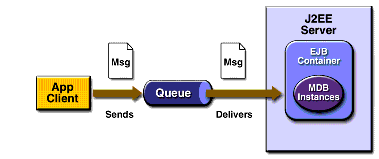

www.netbeans.org
Feedback
java.sun.com
|
Download
www.netbeans.org |
|
API
Feedback java.sun.com |
Example Application Overview
The
SimpleMessageapplication has the following components:Figure 9-1 illustrates the structure of this application. The application client sends messages to the queue, and the JMS provider (in this case, the Application Server) delivers the messages to the instances of the message-driven bean, which then processes the messages.

Figure 9-1 The
SimpleMessageClientApplicationThe source code for this application is in the
<INSTALL>/j2eetutorial14/examples/ejb/simplemessage/directory.
|
Download
www.netbeans.org |
|
API
Feedback java.sun.com |
All of the material in The J2EE(TM) 1.4 Tutorial is copyright-protected and may not be published in other works without express written permission from Sun Microsystems.